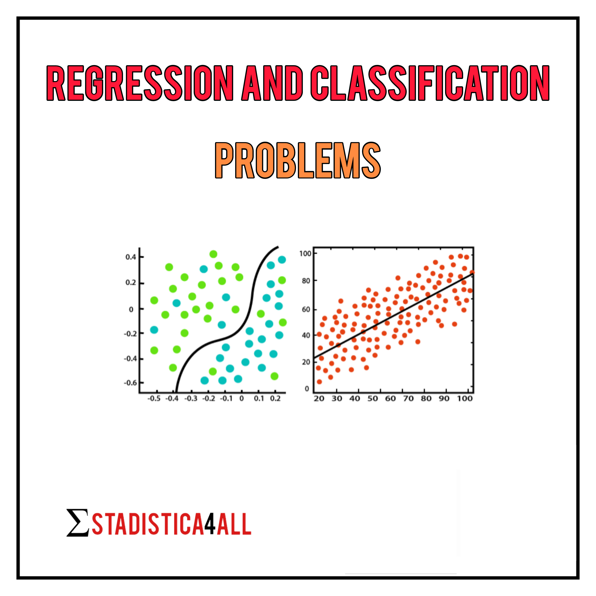

Regression and classification problems
2023-05-29
Chapter 1 Introduction

More articles: \(\hspace{0.02cm}\) Estadistica4all
Author: \(\hspace{0.02cm}\) Fabio Scielzo Ortiz
If you use this article, please reference it:
\(\hspace{1.5cm}\) Scielzo Ortiz, Fabio. (2023). Regression and Classification Problems. Estadistica4all.
We could say that Data Science is the field that tries to solve practical problems using data as primary resource, and mathematics, statistics and programming as auxiliary tools.
Two of the most important problems that Data Science tries to solve are the ones of regression and classification.
Next we are going to make a brief theoretical approach to these problems.